Spring缓存管理原理
Spring缓存管理的实现可以分为两个部分来讲：
- 借力AOP：如何通过AOP使缓存管理生效；
- 缓存管理：缓存管理的本质是什么；
一.借力AOP
1.织入代理对象
为了在业务代码中使用Spring缓存管理，也需要在Bean中织入Advisor，BeanFactoryTransactionAttributeSourceAdvisor就是为缓存而生的Advisor实现类。同事务一样，这里也只需要介绍CacheOperationSourcePointcut是如何匹配的主要逻辑，全流程参代理生成中如何查找Bean适用的Advisor，时序图如下：
{kind=link}
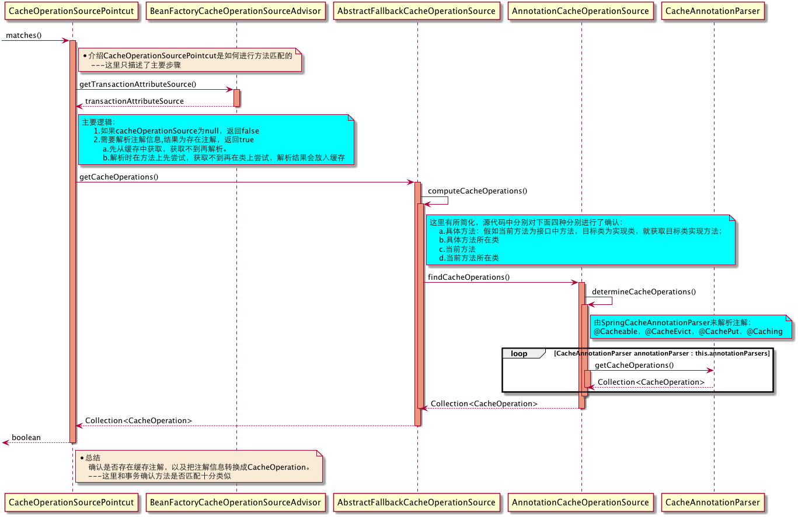
我们再看看BeanFactoryCacheOperationSourceAdvisor长什么样，其中里面包含AOP的上下文和缓存管理的组件。大家暂且仅把它当做一个普通的Advisor就好。
{kind=link}
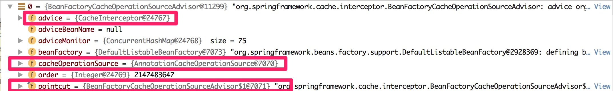
2.交接缓存管理
下图是“AOP框架”与“缓存框架”的交接点：
{kind=link}

很眼熟吧，你看，Spirng设计的这一套规范（抽象能力）多么的强大。
二.缓存管理
Spring缓存管理实际上本身并不含有实际缓存的场所，它只是帮助我们以注解的方式使用缓存，真正的缓存委托给第三方缓存技术来实现，如EhCache，Redis等。
Spring缓存管理主要职责：
- 支持注解方式管理缓存
- 支持不同的缓存机制使用Spring缓存管理的特性
1.注解方式管理缓存
从CacheInterceptor的invoke()交接后，我们看下Spring缓存管理的主要逻辑，时序图如下：
{kind=link}
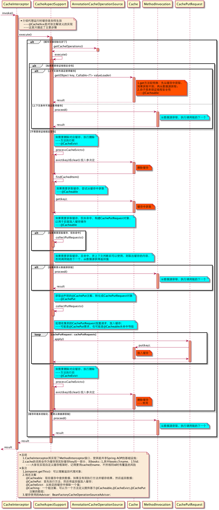
2.支持不同的缓存技术
不同的第三方缓存在接入到Spring缓存管理时，需要实现Cache和CacheManager两个接口。Cache用于实现具体缓存的管理，CacheManager用于管理一组Cache(一般用ConcurrentHashMap来维护)。Spring框架内操作的都是这两个接口，具体实现Spring并不关心。
上面说的比较抽象，稍后我们看以下四点就知道大概怎么回事了：
- 获取Cache
- 放入缓存
- 获取缓存
- 删除缓存
下面我们以Spring对EhCache和Redis支持互相对比,看看如何兼容不同技术栈：
2.1 获取Cache
在我们获取所使用的Cache时，如果CacheManager中没有，就会通过getMissingCache()方法帮助我们构建一个Cache。注意它们都实现了Cache接口，源码如下：
{kind=link}
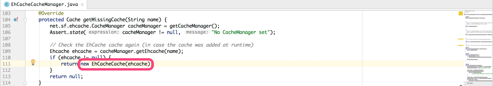
{kind=link}
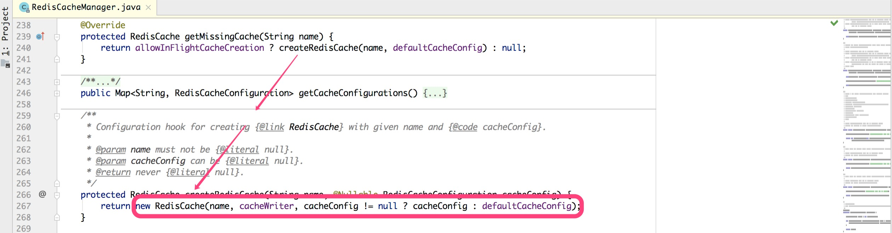
2.2 放入缓存
放入缓存时，具体委托给各个Cache实现类的put()方法，不同的缓存机制可以以自己的方式来操作。
{kind=link}
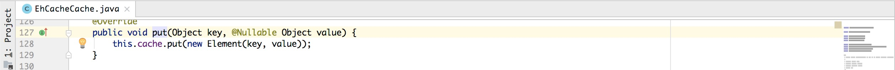
{kind=link}
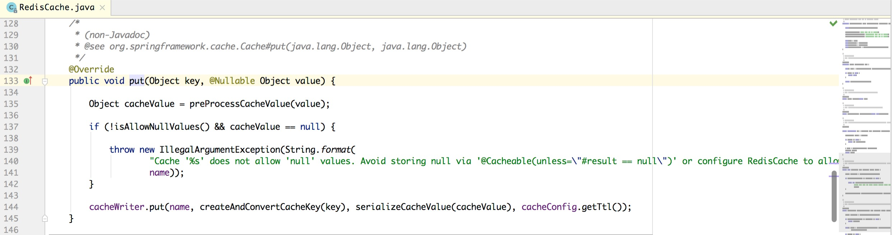
2.3 获取缓存
获取缓存时，具体委托给各个Cache实现类的get()方法，下图中可以看到返回的接口类型是ValueWrapper，ValueWrapper目前仅有一个实现：SimpleValueWrapper,所以两者返回类型是一样的。
{kind=link}
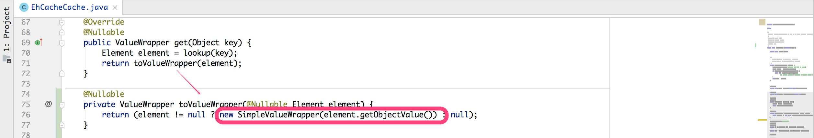
由于RedisCache继承自AbstractValueAdaptingCache（参Cache类图），所以get()方法不在RedisCache中，但真正的获取逻辑lookup()方法是在RedisCache中。
{kind=link}
{kind=link}
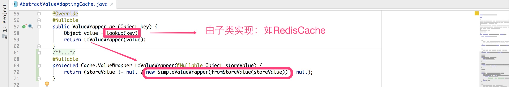
2.4 删除缓存
删除缓存时，也是具体委托给各个Cache实现类。删除分两种：
- 一种是删除指定key的缓存，使用evict()方法；
- 一种是清空当前Cache中的所有缓存，使用clear()方法；
视使用@CacheEvict注解时设置的allEntries值，默认为false（不清空所有）。
{kind=link}
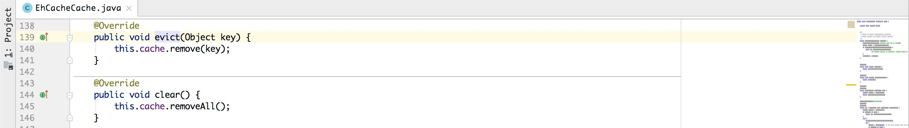
{kind=link}
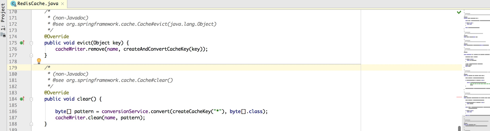
大家如有需要，可以按照以上类似的方式去实现自定义缓存管理。之前同事就做了一个两级缓存：EhCache和Redis两级缓存。实现思路就是自定义了一个CacheManager和Cache并注册到Spring容器中，并通过注册Redis监听同步多台机器缓存数据的一致性。从同事那里首次接触到自定义Spring缓存机制，感觉他的实现方式很强大。
以上就是Spring缓存管理的原理，相比Spring事务要简单很多。接下来我们进入另一个主题：Spring MVC，也先从Spring-MVC基础设施介绍说起。
快速导航：